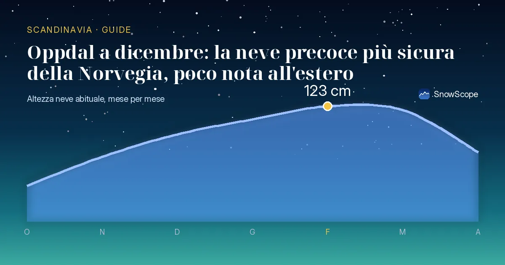

Oppdal a dicembre: la neve precoce più sicura della Norvegia, poco nota all'estero
Oppdal si trova in una valle asciutta dove la neve rimane. Il 15 dicembre, un anno tipico porta 60 cm alla base (585 m), e il 93 percento degli inverni passati ha mantenuto 30 cm o più lì nella settimana prima di Natale. Pochi sciatori stranieri conoscono questa stazione interna, eppure ha la neve all'inizio della stagione più affidabile della Norvegia alla base.
Le previsioni neve in tempo reale per Oppdal nell'app SnowScopeAltezza neve, allerte powder e mappa 3D, gratis.
Perché la base rimane bianca quando altre non lo fanno
Tra Dovrefjell e Trondheim, Oppdal si trova in una valle fredda e asciutta che mantiene meglio la neve rispetto a stazioni più basse nelle vicinanze. I 41 km di piste e 15 impianti si estendono da 585 m a 1327 m, ma ciò che rende dicembre speciale qui è che le piste per principianti e famiglie alla base sono quasi altrettanto innevate della cima.
Il 15 dicembre, gli spessori sono 60 cm alla base, 64 cm a metà montagna (956 m) e 72 cm alla cima (1327 m). Questa vicinanza tra le altitudini è rara in Norvegia.


I numeri che contano per dicembre
Nella settimana del 15-21 dicembre, il 93 percento degli inverni passati ha avuto 30 cm o più alla base. A metà montagna sale al 96 percento, e alla cima al 98 percento. La settimana di Natale (22-28 dicembre) è ancora più sicura: 96 percento alla base, 98 percento a metà e cima.
Anche un anno magro (1 inverno su 10) mantiene 30 cm alla base e 40 cm a metà montagna il 15 dicembre. Quindi la neve scarsa è rara qui a metà inverno.
Giornate più corte, aria più fredda
Dicembre a questa latitudine significa guadagnare meno ore di luce. Il sole sorge tardi e tramonta presto, quindi pianifica di sciare dal primo lume e aspettati una giornata più breve in pista. Il freddo è costante in una valle asciutta, quindi indossa strati e guanti caldi.
Il lato positivo: quel freddo asciutto mantiene la neve leggera e stabile, buona per la maggior parte delle abilità e dei tipi di pista.
Il trend a lungo termine
Nel corso di 46 inverni, la neve di dicembre a Oppdal si è spostata. La base ha avuto una media di 71 cm nella prima metà di questo periodo ma è scesa a 46 cm negli ultimi 15 inverni. L'inverno scorso (2025-26) aveva 38 cm a tutte e tre le altitudini il 15 dicembre: ancora abbastanza per sciare, ma al di sotto della media più vecchia.
Questo rallentamento riflette un modello più ampio in tutta la regione, quindi prenota in anticipo e scegli date prima della settimana principale di Natale se vuoi le condizioni più sicure.
Oppdal rispetto a Trysil: dove contare sulla neve all'inizio
Trysil è più grande e più famosa: 101 km di piste e 40 impianti. Ma a dicembre, la sua base (407 m) è più debole. In un tipico 15 dicembre, la base di Trysil ha 26 cm e solo il 52 percento degli inverni ha mantenuto 30 cm nella settimana del 15-21 dicembre. La sua metà montagna (44 cm, 83 percento) e cima (60 cm, 89 percento) sono solide, ma ancora al di sotto di Oppdal.
Se il tuo gruppo include principianti o vuoi sciare piste basse a dicembre con alta sicurezza, Oppdal è la scelta più sicura.
Come prenotare e come arrivarci
Oppdal si trova sulla ferrovia Oslo-Trondheim e sulla strada principale, quindi puoi raggiungerla senza una lunga salita in montagna con brutto tempo. Gli skipass usano prezzi dinamici impostati per data nel negozio online dell'operatore; il 13 novembre 2026 nessun prezzo fisso era visibile sulla loro pagina ufficiale.
La regola è semplice: acquista online in anticipo e scegli date al di fuori delle vacanze natalizie per pagare meno ed evitare la folla.
Consigli per sciatori
- Famiglie con giovani sciatori: scegli date all'inizio o alla fine di dicembre e usa gli impianti alla base; le piste basse di Oppdal rimangono coperte nel 93 percento degli inverni a metà mese.
- Prenota il tuo skipass online in anticipo e per una settimana prima della settimana di Natale per ridurre il costo e trovare piste più tranquille.
- Inizia la tua giornata al primo impianto; il buio arriva veloce a questa latitudine a dicembre.
- Porta guanti pesanti e strati; le valli asciutte sono spesso la parte più fredda della catena.
- Prima di andare fuori pista nella zona di Dovrefjell, controlla il bollettino valanghe ufficiale norvegese su varsom.no.
Su questi numeri
Le altezze neve delle località sono la neve più alta sui pendii superiori alla data indicata; sono stime per un'area, non una misura in un punto. Le previsioni possono cambiare. Leggi sempre il bollettino valanghe ufficiale prima del fuoripista.
Bollettini valanghe ufficiali: Varsom (NVE)
Cita questo articolo
Per ricerca, didattica o stampa: numeri e grafici sono liberamente riutilizzabili con licenza CC BY 4.0 citando così.
SnowScope (2026), Oppdal a dicembre: la neve precoce più sicura della Norvegia, poco nota all'estero, https://snowscope.app/blog/it/2026/11/oppdal-december-skiing-snow-reliable-norway.html, consultato il 2026-11-14
SnowScope (Atlas Labs). (2026, November 14). Oppdal a dicembre: la neve precoce più sicura della Norvegia, poco nota all'estero. SnowScope snow reports. https://snowscope.app/blog/it/2026/11/oppdal-december-skiing-snow-reliable-norway.html
BibTeX
@misc{snowscope2026oppdaldecemberskiingsnow,
author = {{SnowScope (Atlas Labs)}},
title = {Oppdal a dicembre: la neve precoce più sicura della Norvegia, poco nota all'estero},
year = {2026},
month = nov,
howpublished = {\url{https://snowscope.app/blog/it/2026/11/oppdal-december-skiing-snow-reliable-norway.html}},
note = {Published 2026-11-14 13:44 UTC; accessed 2026-11-14}
}· CC BY 4.0 · Metodi, dati e strumenti →
Oppdal: neve e temperatura per quota, quest'inverno vs lo scorso (strumenti) →
Segui Oppdal
Gratis: un messaggio quando arriva la neve e il meteo ogni mattina.